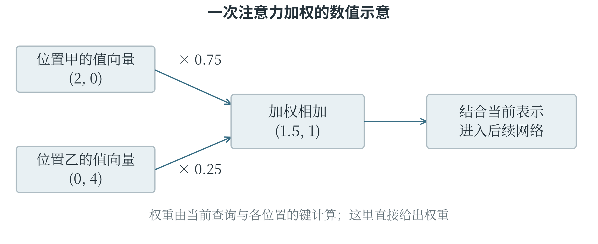
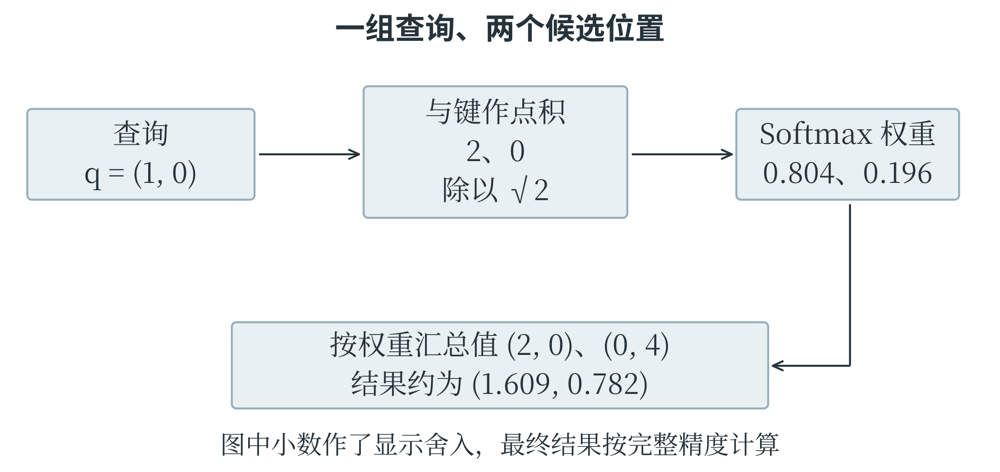
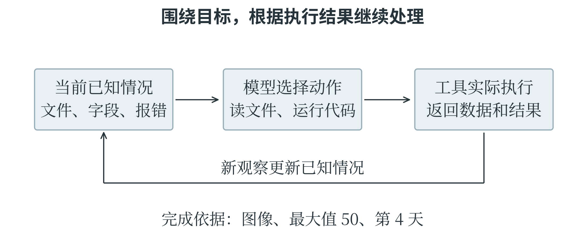
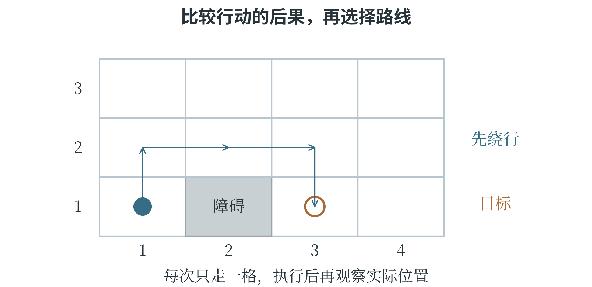

8.1 当代人工智能的主要方向
文字怎样进入神经网络
处理文字时，模型首先要把文本变成能够计算的序列。词元，英文 token，是模型处理文本时使用的基本片段，可以是一个字、一个词、词的一部分，也可能是标点或其他符号。词元不固定等于一个汉字或一个英文单词，怎样切分取决于分词规则。每个词元先对应编号，再通过嵌入变成数值向量，网络才能对它进行后续运算。一段文字的意思不仅取决于出现了哪些词，还取决于顺序和上下文。“小明把书借给小林”与“小林把书借给小明”用了同样的人名，借出者却不同。第五章介绍的词频统计可能丢掉这种区别，模型需要保留位置，并让某个位置的表示参考其他相关位置。输入序列能在一次处理中容纳的范围，常称为上下文窗口；它有容量限制，也不等于模型已经永久记住这些内容。
Transformer 与注意力
注意力机制根据当前处理内容，计算其他位置的信息应当占多大份量，再进行加权汇总。这里的“注意力”是一种可学习的数值计算，借用了人的注意力这一名称。例如，在“盒子装不进书包，因为它太大了”中，理解“它”需要结合前文的对象和关系。注意力机制使表示某个位置时，可以按相关性组合其他位置的信息；具体关联仍由模型学习，不是程序预先把“它”固定指向某个词。
把一次计算简化为两个候选位置，如果权重分别为 0.75、0.25，两个向量为 \((2,0)\)、\((0,4)\)，加权结果就是 \(0.75(2,0)+0.25(0,4)=(1.5,1)\)。
真实模型会从输入计算三组向量，分别称为查询、键和值。查询表示当前要匹配的信息，键用于与查询比较，值则提供实际参与汇总的内容。可以把这三者理解为“按什么找、拿什么来匹配、取出什么信息”三个环节。查询与键的点积等计算产生匹配分数，再由 Softmax 转成非负、总和为 1 的权重。
自注意力表示查询和所参考的信息来自同一序列，序列中的位置相互提供上下文。多头注意力并行使用多组不同的投影与加权计算，再组合结果，使模型能从不同表示中提取关系。每一组有自己的参数，因而可以形成不同的匹配方式；它们的具体作用是在训练中逐步形成的，并没有事先分配好“专管语法”或“专管人物”之类的固定职责。
2017 年提出的 Transformer 是以注意力为核心的神经网络架构。它还包含前馈网络、位置表示、残差连接和归一化等组成部分。前馈网络进一步变换每个位置的表示；残差连接把输入与变换结果相加，帮助信息和训练信号跨层传递；位置表示提供顺序线索。这里网络内部的归一化与第五章按训练样本列做标准化都涉及调整数值尺度，但处理对象和具体规则不同。

Transformer 在训练时可以并行处理序列中的许多位置，但常见的自回归文本生成仍按已经生成的内容逐步预测下一个词元。用于这种任务时，注意力还要遮住当前位置之后的目标内容，避免训练时提前看到本来需要预测的答案。不同 Transformer 变体的连接方式和可见范围不同，因此不能把“并行训练”解释成任何系统都一次生成整段答案。
从匹配分数算出注意力结果
注意力里的“相关”可以怎样算？用一个只有两个候选位置的例子，就能看清点积、Softmax 与加权和怎样接起来。假设当前查询为 \(q=(1,0)\)，两个键为 \(k_1=(2,0)\)、\(k_2=(0,2)\)，两个值为 \(v_1=(2,0)\)、\(v_2=(0,4)\)。这里的数是为演示计算而指定的，并不代表某个真实词语天然具有这些坐标。查询分别与两个键作点积，得到 2 和 0。常见的缩放点积注意力还把分数除以键向量维数的平方根；本例维数为 2，缩放后的分数约为 1.414 和 0。将它们送入 Softmax，第一个位置的权重为
第二个权重约为 0.196。于是汇总结果约为
第一个候选与查询更匹配，所提供的值在结果中占较大份量；第二个候选仍然贡献一部分信息。若改成查询 \((0,1)\)，两个匹配分数就交换了位置，结果也会随之改变。注意力不是给每个词贴一个永久不变的重要程度，而是根据当前查询重新计算关系。

下面的程序直接使用 NumPy 完成上述步骤。keys @ query 同时计算两个键与查询的点积；最后一行的矩阵乘法，则把两个值向量按对应权重相加。
import numpy as np
query = np.array([1.0, 0.0])
keys = np.array([[2.0, 0.0], [0.0, 2.0]])
values = np.array([[2.0, 0.0], [0.0, 4.0]])
scores = keys @ query / np.sqrt(keys.shape[1])
exp_scores = np.exp(scores - scores.max())
weights = exp_scores / exp_scores.sum()
output = weights @ values
print(np.round(weights, 3))
print(np.round(output, 3))
输出分别约为 [0.804, 0.196] 和 [1.609, 0.782]。程序保留中间计算的精度，手算先把权重取了三位小数，因此最后两项略有差别。计算指数前减去最大分数，不改变各指数之间的比例，却能让指数的输入不超过零，减少数值过大造成的问题。这与第六章的 Softmax 公式等价，计算时更稳定。
小例子中的查询、键和值是给定的。真实网络中的这些向量从哪里来？它们由当前表示与可学习的矩阵运算产生，训练会同时调整这些矩阵和网络的其他参数。以上小例子展示一个位置、一个注意力头的一次计算；扩展到更多位置、更多头和更多层，基本计算关系仍然成立。
预训练、规模定律与能力表现
预训练让模型先从较广泛的数据中学习通用表示和预测能力。文本模型可以根据前面的词元预测后面的词元，目标直接来自原始文本，是自监督学习的一种方式。之后再用特定任务数据或指令样本继续调整，称为微调；根据偏好反馈等进一步调整行为，也属于后续训练过程。使用时把资料放进提示或检索结果，通常只改变这一次可参考的上下文，不会自动改变模型参数。
模型之所以能生成通顺文字，与训练中学到的模式和关系有关，但“预测下一个词元”是训练任务的描述，并不意味着它只会机械拼接几个高频词。许多层表示组合之后，可以支持翻译、代码生成和推理等行为。
语言流畅并不保证事实正确，某个判断没有证据时，模型也可能生成看似合理的内容。评价能力需要使用具体任务与独立材料，不能只凭一段令人印象深刻的回答。
规模定律描述在一定实验范围和条件下，模型规模、训练数据量、计算投入与损失等指标之间观察到的规律。增加参数、数据或计算，往往可以按某种趋势改善指标，但三者需要配合：大模型没有足够合适数据，或者数据很多却训练不足，都可能浪费资源。这是经验规律，不是“扩大任意一项就必定获得任意能力”的定理。
大模型有时在规模或训练条件变化后，表现出原先不明显的任务能力，这类现象常被称为涌现。观察到的突变程度也可能受评价方式影响：一个必须整题全对才得分的指标，可能把逐步改善显示成突然跃升。研究涌现，需要同时考察任务、指标和证据。它本身也不能证明模型具有人类的意识或责任能力。
模型规模还会影响部署。参数更多，通常需要更大的存储空间和更多计算；推理速度又受输入长度、生成长度、硬件和软件实现共同影响。GPU、NPU 及其软件平台的作用，仍可回到第一章的数据传送、并行运算和存储容量理解。模型排行榜的一个总分，无法同时回答成本、响应时间、可靠性和适用场景等所有问题。
智能体与辅助编程
智能体系统不仅产生一段回答，还会围绕目标选择步骤、调用工具、观察结果，再决定下一步。例如，整理观测记录时，系统可以读取文件、运行统计代码、检查报错、修正程序并生成图表。模型提供部分规划或判断，工具实际执行读取和计算，系统再把工具结果交回模型。这种循环与第四章的状态和反馈有关。
模型提出行动，工具执行行动，两者的能力需要区分。语言模型可以提出“读取某文件”的调用，能否读到文件取决于系统是否提供工具及相应访问权限。工具返回真实数据后，模型仍可能解释错误；工具没有执行成功，也不能把它计划得到的结果当作已经完成。
完成了哪些工作，要看实际动作与输出记录。
OpenClaw，中文讨论中常称“小龙虾”，是一个开源的个人 AI 助手系统，能够将消息渠道、智能体运行和工具能力连接起来。它可以接入模型服务，围绕消息和任务组织处理，并不等于一个新的基础语言模型。能完成哪些操作取决于连接的模型、工具、配置和授权。理解这类产品时，应把模型、应用系统和外部工具分开，不必把产品的每项配置都当成新的人工智能原理。
Vibe Coding 常译作氛围编程，指通过自然语言表达意图，让 AI 生成和修改代码，并根据运行结果继续调整的一类开发方式。日常用法有宽有窄，其中较窄的用法强调主要凭运行效果推进、很少深入阅读生成代码。它降低了制作原型的门槛，但程序是否符合要求，仍然由输入、执行过程和输出决定，不能只靠“看起来能用”。例如，要求程序计算平均叶长，如果没有说明无效记录怎样处理、空数据怎么办，生成代码就可能自行选择规则。即使几个普通样例正确，也可能在空列表或缺失值上失败。AI 能帮助编写程序，读懂和验证程序的能力则帮助人判断这份帮助是否可靠。
一个智能体任务怎样结束
设定一个具体任务：“读取四天的设备记录，画出每日处理数量，并找出数量最多的一天。”单纯的文本回答可以描述做法，智能体则要让相关工具实际完成操作。它先读取文件，看见字段 day 和 count，再运行统计与绘图程序。如果程序返回“找不到列 counts”，这个报错就是新的观察，下一步应核对字段，把误写的复数改成实际列名，然后重新运行。目标没有改变，已知情况却在每一步增加。开始时只知道文件名；读取后知道了字段；出错后知道代码与字段不一致；运行成功后又取得数值结果和图像。图 8-3 中的循环，正是第四章“状态—行动—反馈”在软件系统中的一种应用。

怎样判断任务已经结束？如果输入记录是 20、35、30、50，最终应能找到对应四天的图、最大值 50，以及第 4 天这一结论。只输出“已完成”而没有这些结果，不能证明任务要求得到了满足。同样，生成了一张好看的图，也要核对它是否使用了这四个数。
智能体也可能陷入重复尝试：同一个报错出现多次，却始终修改无关的地方。有效的反馈需要改变下一步判断，而不只是把原动作再做一遍。对于学校里的小型编程任务，保留输入文件、运行记录和最终结果，就能清楚看出工具究竟完成了哪些步骤，哪一步仍需要人来处理。
具身智能与世界模型
具身智能研究智能系统怎样通过身体或类似身体的行动能力，与环境持续交互。机器人用摄像头感知前方，规划路线，驱动轮子移动，再观察是否偏离目标，就是感知、决策、执行、再感知组成的闭环。只生成一段“机器人应该怎样走”的文字，还没有在物理环境中完成这条闭环；而按固定程序运动的机械装置，则可能主要依靠事先写好的控制规则。行动之前，系统还可以先预测后果。世界模型试图表示环境怎样变化，以及行动可能带来什么后果。系统可以在实际行动前，比较“向左绕行”“向右绕行”“等待”等候选动作的预测结果，再作选择。
这里的“世界”可以只是一个房间、一段道路或一个游戏场景，并不表示模型掌握现实世界的全部知识。第六章中的回归预测一个数值，世界模型则常要预测后续状态、观察或奖励等更丰富的信息。
世界模型可以用于规划和模拟训练，具身智能强调通过行动与环境交互，两者有联系但不相同。一个机器人可以采用没有显式世界模型的控制方法，一个世界模型也可以只在虚拟环境中工作。能生成逼真视频的系统若没有展示动作与后果之间可靠的对应，也不能仅凭画面就认定它已经能够指导任意现实行动。
预测多步未来时，前一步的小误差可能传到后一步，逐渐扩大。系统实际移动后重新感知，比较预测与结果，可以发现偏差并修正下一步判断。若一次绕行成功，只能支持这次条件下的表现；遇到地面打滑、遮挡或未见过的物体，仍需新的评价。
在预测中比较行动
世界模型与一般分类器的区别，可以通过小车绕行来观察。分类器根据摄像头画面判断“前方有障碍物”，回答的是当前观察属于哪一类。世界模型则尝试回答：“从当前位置向左转并前进，下一步可能在哪里？会不会碰到障碍物？”它把当前状态与候选行动一起考虑，用于预测后续状态。假设一个网格场地中，小车位于 \((1,1)\)，目标在 \((3,1)\)，中间的 \((2,1)\) 被障碍物占据。四个方向每次只能走一格。一个知道网格规则的简化预测器可以判断，直接向右会受阻，而先到 \((1,2)\)，再经过 \((2,2)\)、\((3,2)\)，最后到达目标，是一条可行路线。这种预测器的规则是人写出的；学习型世界模型则尝试从交互记录中学出环境变化规律。两者都可以为行动比较提供预测，获得预测的方式不同。

网格中的一步是确定的，现实小车的一步却可能受速度、转弯半径和地面摩擦影响。即使路线规划正确，也不保证轮子每次都把车带到预期位置。执行一小段之后重新观察，再调整下一段，比完全依赖最初的长程预测更能应对偏差。这里同时用到了预测模型和反馈控制：前者帮助比较尚未发生的可能性，后者利用已经发生的结果修正行动。